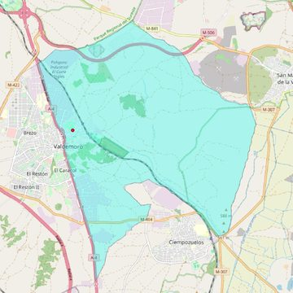

Santiago Apóstol
- Arciprestazgo
- Valdemoro
- Población
- Valdemoro
- Dirección postal
- Pº de la Estación, 23
- Código postal
- 28343
- Extensión
- 38,82 km² (3.882 ha)
- Teléfono
- 918 094 979
- Correo electrónico
- parroquiasantiagovaldemoro@gmail.com
- Información demográfica
- De la parroquia · De la población (Valdemoro) · Del arciprestazgo (Valdemoro)
- Dirección corta
- charlie-diaz-azarola.github.io/geoestadistica/p/115
- Resumen para imprimir
- La parroquia en una hoja (A4)


Descargar mapaLímites según decreto
“Partiendo de la confluencia de la autovía Madrid-Cádiz (N-4) con el Paseo de la Estación, arrancan por el eje de la autovía Madrid-Cádiz (en dirección noroeste); continúan por los límites de los términos municipales de Valdemoro y Pinto, de Valdemoro y San Martín de la Vega, de Valdemoro y Ciempozuelos (en dirección noreste, sureste y suroeste, respectivamente) y por el eje de la autovía N-4 hasta la confluencia con el Paseo de la Estación, punto de partida” (Decreto de erección de 25-5-2000: Boletin Oficial, Junio-2000, pág. 543-544)
¿Algún dato de esta parroquia es incorrecto o ha cambiado? Comuníquenoslo.